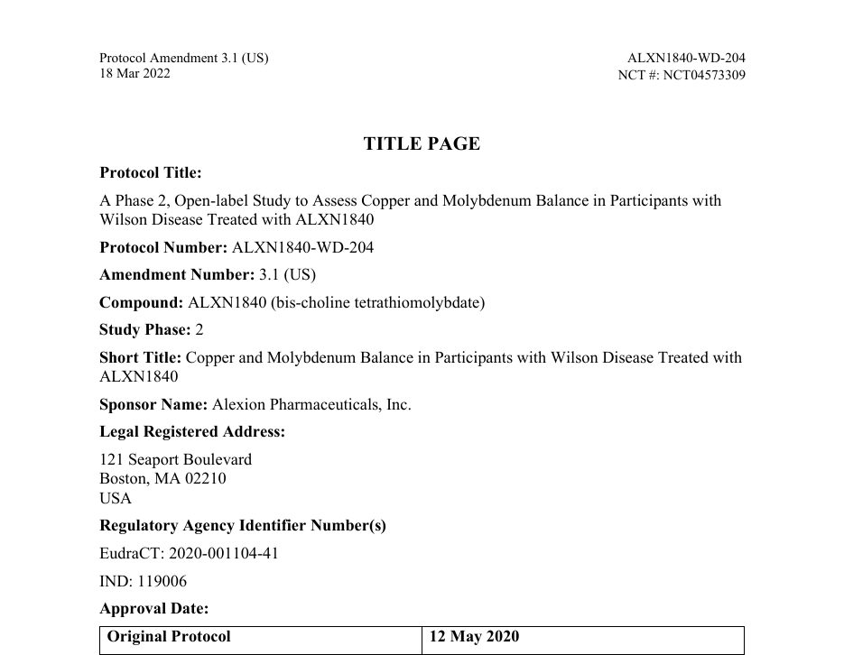
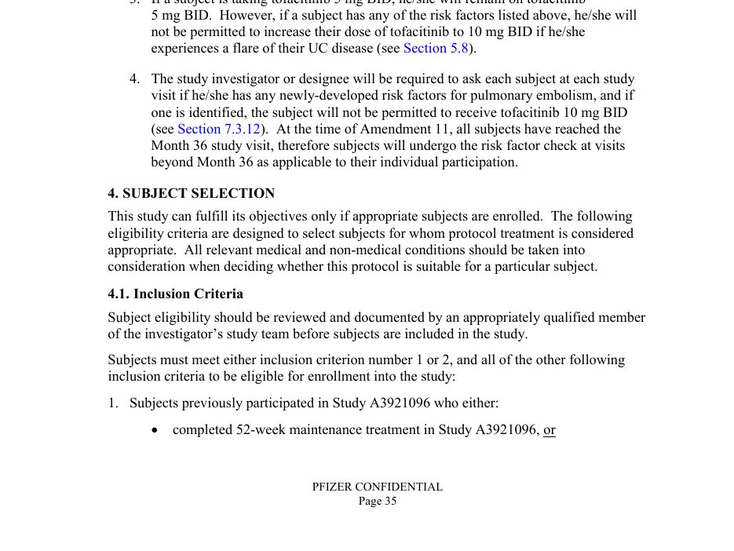
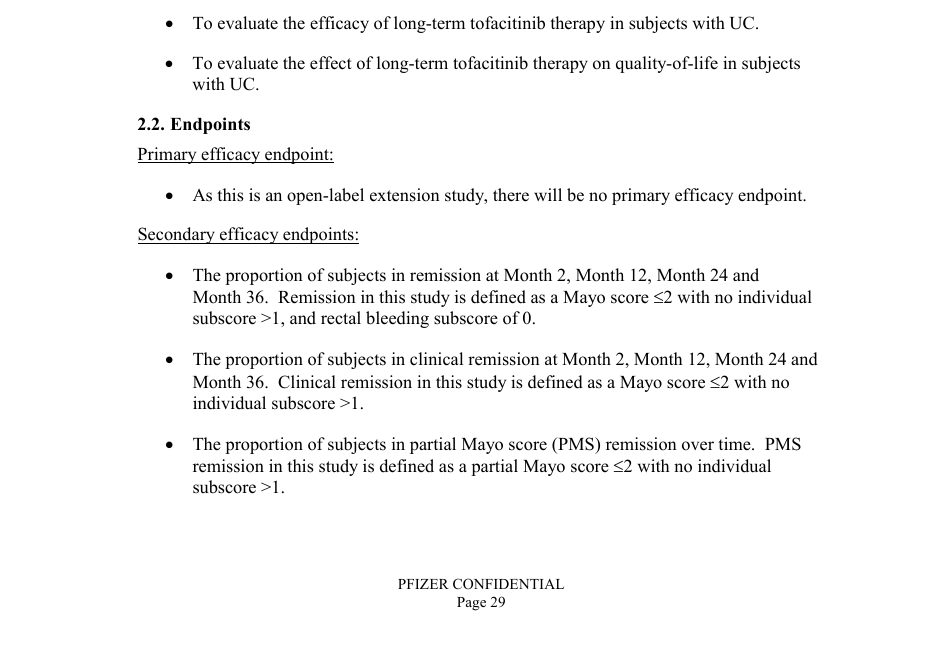
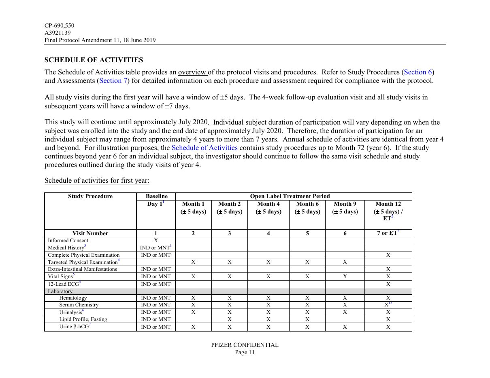
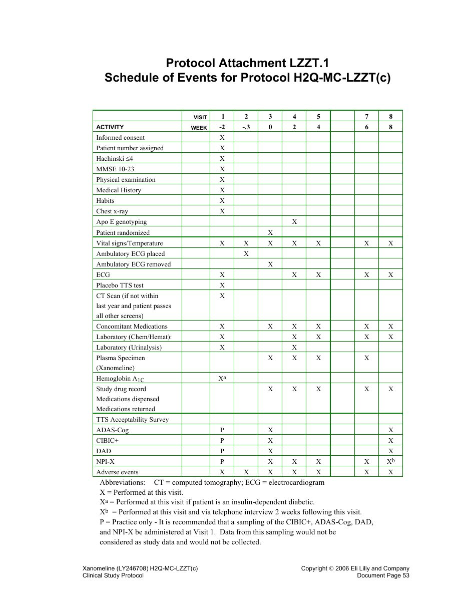
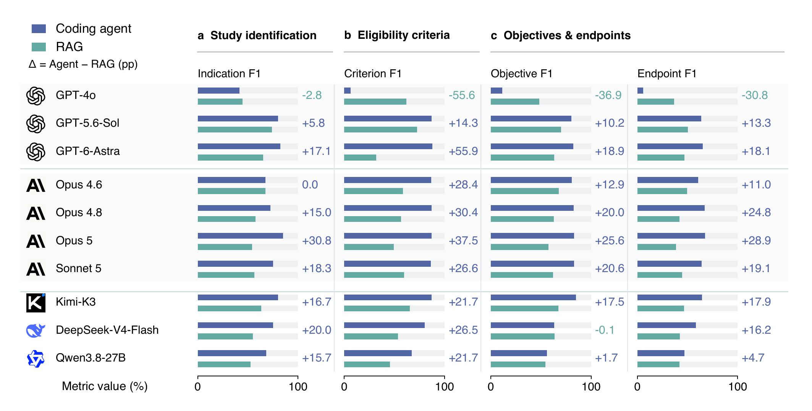
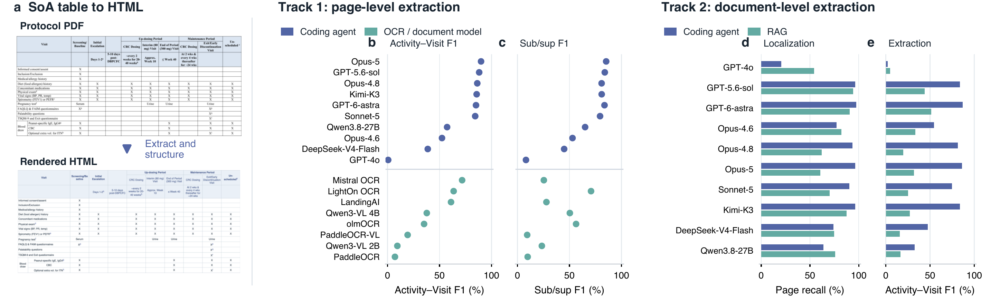
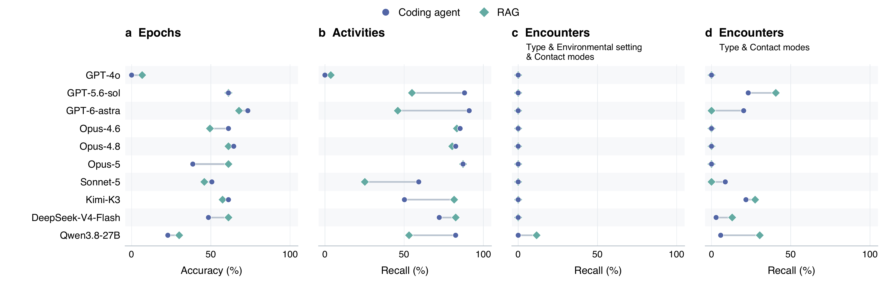
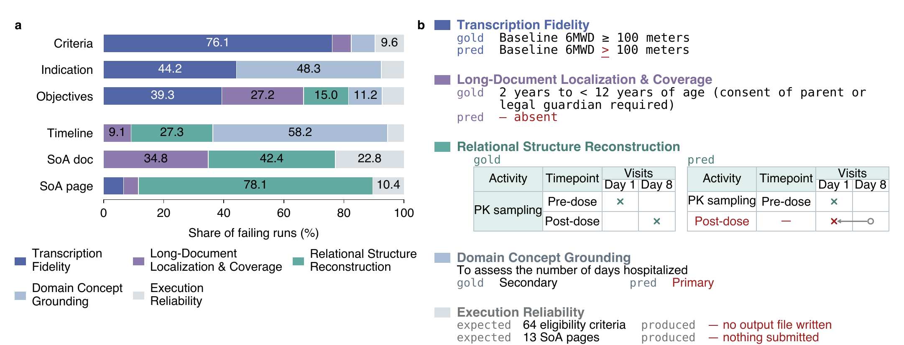
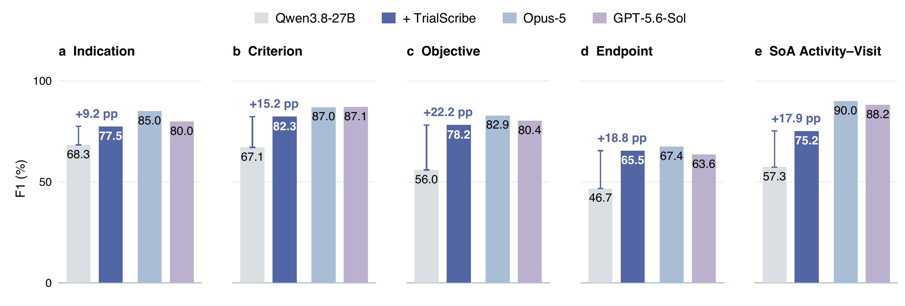

Tasks
The input to every task is the entire protocol PDF, not a pre-selected excerpt. Protocols in TrialPD-Bench run to a median of 122 pages and up to 368, and finding the few pages that hold the answer is part of the task. Each example below marks where the answer sits in the PDF, shows that page, and gives the reference output; long outputs are shortened for display.
Find the disease or condition the study investigates and return it in the protocol's own wording, keeping qualifiers such as severity or stage.
Input the entire protocol PDF

Output indications.json · reference annotation
{
"descriptions": [
"Wilson disease"
]
}Locate the detailed eligibility section and transcribe every numbered inclusion and exclusion criterion verbatim, one item per criterion, with sub-points kept inside it as HTML.
Input the entire protocol PDF

Output criteria.json · reference annotation
{
"criteria": [
{
"category": "Inclusion",
"name": "IN01",
"text": "<p>Subjects previously participated in Study A3921096 who either:</p>\n<ul>\n<li><p>completed 52-week maintenance treatment in Study A3921096, or</p></l…"
},
{
"category": "Inclusion",
"name": "IN04",
"text": "<p>Women of childbearing potential must have a negative pregnancy test prior to study enrollment.</p>"
},
{
"category": "Exclusion",
"name": "EX02",
"text": "<p>Presence of indeterminate colitis, microscopic colitis, ischemic colitis, infectious colitis, or clinical findings suggestive of Crohn’s disease.</p>"
}
// … 15 more criteria (6 inclusion, 12 exclusion in total)
]
}Extract every objective with its level and attach the endpoints that measure it. An endpoint's level is read from its own heading, so it can differ from its objective's level.
Input the entire protocol PDF

Output objectives.json · reference annotation
{
"objectives": [
{
"objectiveId": "OBJ1",
"objectiveLevel": "PRIMARY",
"levelVerbatim": "Primary",
"objectiveText": "To assess the safety and tolerability of long-term tofacitinib therapy in subjects with UC.",
"endpoints": [
{
"endpointId": "END1",
"endpointLevel": "SECONDARY",
"endpointText": "Incidence and severity of adverse events (AEs)."
},
{
"endpointId": "END2",
"endpointLevel": "SECONDARY",
"endpointText": "Incidence of serious infections."
}
]
},
{
"objectiveId": "OBJ2",
"objectiveLevel": "SECONDARY",
"levelVerbatim": "Secondary",
"objectiveText": "To evaluate the efficacy of long-term tofacitinib therapy in subjects with UC.",
"endpoints": [
{
"endpointId": "END9",
"endpointLevel": "SECONDARY",
"endpointText": "The proportion of subjects in remission at Month 2, Month 12, Month 24 and Month 36. Remission in this study is defined as a Mayo score ≤2 with no individual subscore >1, and rectal bleeding subscore of 0."
}
]
}
// … 3 objectives and 13 endpoints in total
]
}Transcribe the SoA table into HTML, resolving merged cells and multi-level visit headers and keeping footnote markers as superscripts. At the document level, the agent must first find the SoA pages.
Input the entire protocol PDF
The document-level track gives the whole PDF, and the agent must find all six SoA pages. The page-level track gives one of these pages at a time.

Output p11.html · reference annotation
| Study Procedure | Baseline | Open Label Treatment Period | |||||
|---|---|---|---|---|---|---|---|
| Day 11 | Month 1 (± 5 days) | Month 2 (± 5 days) | Month 4 (± 5 days) | Month 6 (± 5 days) | Month 9 (± 5 days) | Month 12 (± 5 days) / ET2 | |
| Visit Number | 1 | 2 | 3 | 4 | 5 | 6 | 7 or ET2 |
| Informed Consent | X | ||||||
| Medical History3 | IND or MNT1 | ||||||
<table>
<tr><th rowspan="2">Study Procedure</th><th>Baseline<br></th><th colspan="6">Open Label Treatment Period</th></tr>
<tr><td>Day 1<sup>1</sup></td><td>Month 1<br>(± 5 days)</td><td>Month 2<br>(± 5 days)</td><td>Month 4<br>(± 5 days)</td><td>Month 6<br>(± 5 days)</td><td>Month 9<br>(± 5 days)</td><td>Month 12<br>(± 5 days) / ET<sup>2</sup></td></tr>
<tr><td><strong>Visit Number</strong></td><td>1</td><td>2</td><td>3</td><td>4</td><td>5</td><td>6</td><td>7 or ET<sup>2</sup></td></tr>
<tr><td>Informed Consent</td><td>X</td><td></td><td></td><td></td><td></td><td></td><td></td></tr>
<tr><td>Medical History<sup>3</sup></td><td>IND or MNT<sup>1</sup></td><td></td><td></td><td></td><td></td><td></td><td></td></tr>
<!-- … 11 more rows -->
</table>Recover the study's epochs in order, its encounters with USDM type, environmental setting, and contact modes, and its activities.
Input the entire protocol PDF

Output timeline.json · reference annotation
{
"studyDesignEpochs": [
{
"type": "SCREENING"
},
{
"type": "TREATMENT"
},
{
"type": "TREATMENT"
},
{
"type": "TREATMENT"
},
{
"type": "FOLLOW-UP"
}
],
"studyDesignEncounters": [
{
"label": "Screening 1",
"description": "Screening encounter",
"type": "Visit",
"environmentalSetting": "CLINIC",
"contactModes": "In Person"
},
{
"label": "Screening 2",
"description": "Screening encounter - Ambulatory ECG Placement",
"type": "Visit",
"environmentalSetting": "CLINIC",
"contactModes": "In Person"
}
],
"studyDesignActivities": [
{
"label": "Informed consent"
},
{
"label": "Inclusion and exclusion criteria"
},
{
"label": "Patient number assigned"
}
// … 36 activities in total
]
}Abstract
Clinical trial protocol digitization converts protocol documents into structured, machine-readable study definitions that downstream trial systems can reuse. Existing LLM-based systems rely on predefined workflows, which may adapt poorly to the varied structure of complete protocols, whereas coding agents can choose tools and revise their processing strategy as they work. We investigate whether coding agents can reliably digitize clinical trial protocols. We introduce TrialPD-Bench, an expert-annotated benchmark of 150 protocol PDFs spanning four task categories: disease indication, eligibility criteria, objectives and endpoints, and schedule of activities. Evaluating ten proprietary and open-weight models across five coding-agent harnesses, we find that coding agents substantially outperform a predefined retrieval-augmented generation (RAG) pipeline and specialist OCR models, but their gains depend on the underlying model, and even the strongest agents can have substantial errors. We further develop TrialScribe, a domain-specific harness that equips coding agents with task skills and a verification loop. TrialScribe improves a locally served open-weight model by 9.2–22.2 F1 points across tasks, enabling it to match or surpass proprietary models such as GPT-5.6-Sol.
TrialPD-Bench
Every task starts from a complete protocol PDF from ClinicalTrials.gov, so locating the relevant section is part of the task. Sponsors organize protocols differently: a Schedule of Activities (SoA) table may appear near the beginning or in an appendix, with its own arrangement of study periods, visit windows, multi-level headers, and footnotes. Five experts in the clinical trial domain produced the reference annotations, and output schemas follow the CDISC Unified Study Definitions Model (USDM).
| Task | Input | Samples | Reference annotations | Main metrics |
|---|---|---|---|---|
| Disease indication | Protocol PDF | 40 | 41 indication descriptions | Indication F1 |
| Eligibility criteria | Protocol PDF | 134 | 3,974 criteria (1,337 inclusion, 2,637 exclusion) | Eligibility criteria F1 |
| Objectives and endpoints | Protocol PDF | 89 | 665 objectives, 1,484 endpoints | Objective, endpoint, objective-linked endpoint F1 |
| SoA table, page level | Single SoA page | 86 | 86 tables, 5,001 activity–visit pairs | Activity–Visit F1, Sub/sup F1 |
| SoA table, document level | Protocol PDF | 37 | 70 tables | Page recall, Activity–Visit F1 |
| Structured timeline | Protocol PDF | 3 | 14 epochs, 69 encounters, 115 activities | Epoch accuracy, activity and encounter recall |
Text-based and scanned PDFs
The protocols come as they were posted. Some have a usable text layer. Others are scans, or their text layer drops or garbles characters, so the content can be read only from the rendered pages or with OCR; 16 of the 150 documents have no extractable text at all. We call a PDF vision-required for a task when the content that task needs cannot be recovered from the text layer.
What the Tasks Require
Protocol digitization combines five capabilities. Our failure analysis groups agent errors into the same five categories, and the dominant one differs by task: transcription fidelity for eligibility criteria, relational structure for SoA tables, and domain concept grounding for disease indication and structured timelines.
Copy the source text exactly, including numbers, units, and comparison operators.
e.g., “≥ 100 meters” written as “> 100 meters”
Find every relevant passage in a protocol of a hundred pages or more, across sections and page breaks.
e.g., 9 of 11 objectives missed on one protocol
Rebuild how items relate: marks in the right SoA cells, endpoints under the right objective, epochs in order.
e.g., one misresolved merged cell shifts every mark after it
Pick the clinical entity, category, or controlled term the standard asks for.
e.g., “Clinical research unit” instead of the USDM term CLINIC
Finish the multi-step run and write a complete, valid output file.
e.g., missing, empty, or unparseable output
Main Results
- Coding agents substantially outperform a RAG pipeline. With the same model, agents improve eligibility criteria F1 by 14.3–55.9 points and endpoint F1 by 4.7–28.9 points for nine of ten models. On SoA tables the six strongest agents reach 74.7–86.8 Activity–Visit F1, against 19.8–51.5 for RAG.
- Coding agents outperform specialist OCR and document-understanding models on SoA tables. The six strongest agents reach 84.3–90.0 page-level Activity–Visit F1; the best specialist baseline, Mistral OCR, reaches 71.7.
- The gains depend on the underlying model. GPT-4o falls from 61.9 eligibility criteria F1 within RAG to 6.2 as a coding agent, while page-level SoA Activity–Visit F1 rises from 52.4 for Opus 4.6 to 86.3 for Opus 4.8.
- Even the strongest agents do not fully solve the task. The best endpoint F1 is 67.4, and on structured timeline extraction encounter recall reaches only 23.2.

Coding agents and the RAG baseline on disease indication, eligibility criteria, and objectives and endpoints. Annotations give Δ = Agent − RAG.

SoA table extraction: page level against OCR and document-understanding baselines, document level against RAG.

Structured timeline extraction on three official CDISC example protocols: epoch accuracy, activity recall, and encounter recall.
Failure Analysis
We assign each failing agent run to one of five categories: transcription fidelity, long-document localization and coverage, relational structure reconstruction, domain concept grounding, and execution reliability. The dominant category differs by task. Transcription fidelity accounts for 76.1% of failing eligibility-criteria runs, and relational structure accounts for 78.1% of failing page-level SoA runs, most often because scheduling marks land in the wrong cells. Small transcription changes can alter clinical meaning: among near-verbatim criteria, 167 alter a comparison operator and 309 alter a number.

(a) Distribution of failure categories within each task. (b) Examples of the five categories, with incorrect or missing predictions in red.
TrialScribe
Protocols are often confidential, which favors open-weight models that run locally. TrialScribe is a domain-specific harness layer that equips an existing coding agent with task skills, one SKILL.md per task describing where protocols place the information and which conventions define a correct output, and a verification loop, in which a fresh session audits the draft against the protocol and the agent applies minimal source-supported fixes. It does not prescribe the agent's execution steps. We run it with Qwen3.8-27B in the Pi harness on four NVIDIA A100 GPUs.
With TrialScribe, the local model surpasses GPT-5.6-Sol on endpoint extraction (65.5 vs. 63.6) and comes within 1.9 points of Opus-5 on endpoints. It remains 2.2–7.5 points below both proprietary agents on indication, eligibility criteria, and objectives, and 13–15 points below them on page-level SoA extraction.

Qwen3.8-27B with TrialScribe, the same model without it, and two proprietary coding agents. The span above each pair of Qwen bars gives the gain in points.